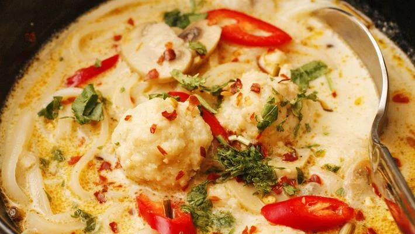

Receita de Filé de merluza assado com leite de coco
Ingredientes
- 1 kg de filé de merluza
|
- 300 g de mussarela fatiada
|
- 1 lata de creme de leite
|
- 1 garrafa de leite de coco
|
- 1 cebola
|
- 1 tomate
|
- Sal e pimenta do reino a gosto
|
- Suco de um limão
|
Modo de preparo

- Tempere os filés com o sal, a pimenta e o limão.
|
- Deixe descansar por 10 minutos.
|
- Arrume os filés e coloque as fatias de mussarela no meio de cada um deles e enrole como se fosse um bife a rolê.
|
- Depois de todos os filés enrolados, arrume uma bandeja.
|
- Coloque as fatias de tomate e cebola (em rodela) por cima.
|
- Cubra com a mistura de creme de leite e leite de coco.
|
- Leve ao forno coberto com papel alumínio por 20 minutos.
|
- Depois retire para terminar de assar.
|